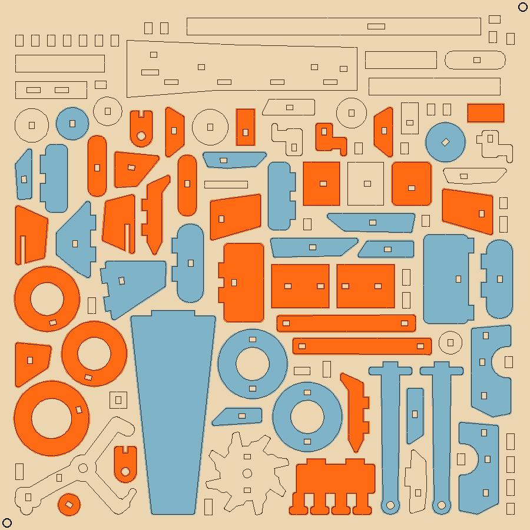

<job>_bed.lbrn2 in the kit's cutfiles folder. The order is set: engrave, score, holes, outlines.
print_mode folder.Hartwood Designs, SOP-2, Rev A, 2026-10-12. Times and settings marked Estimate are planning numbers until measured on the real machine. Machine details follow the OMTech manual when it differs from this sheet.